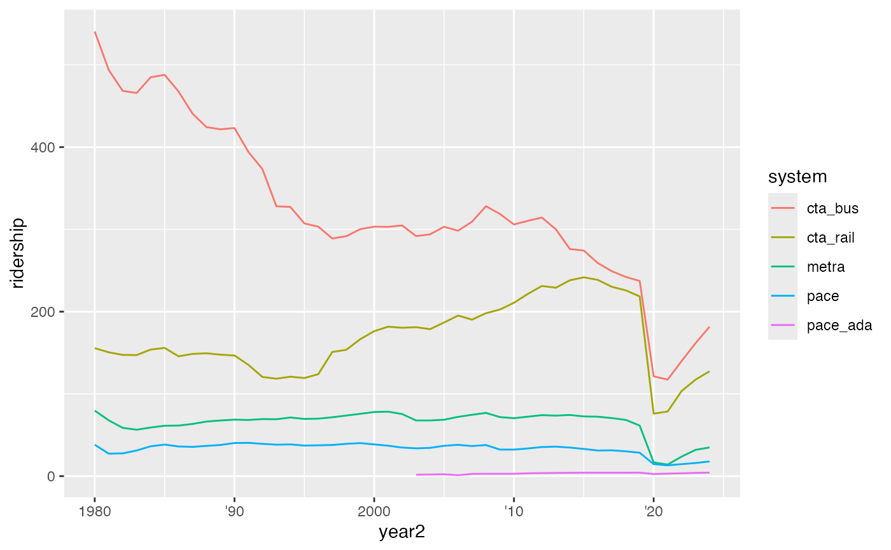
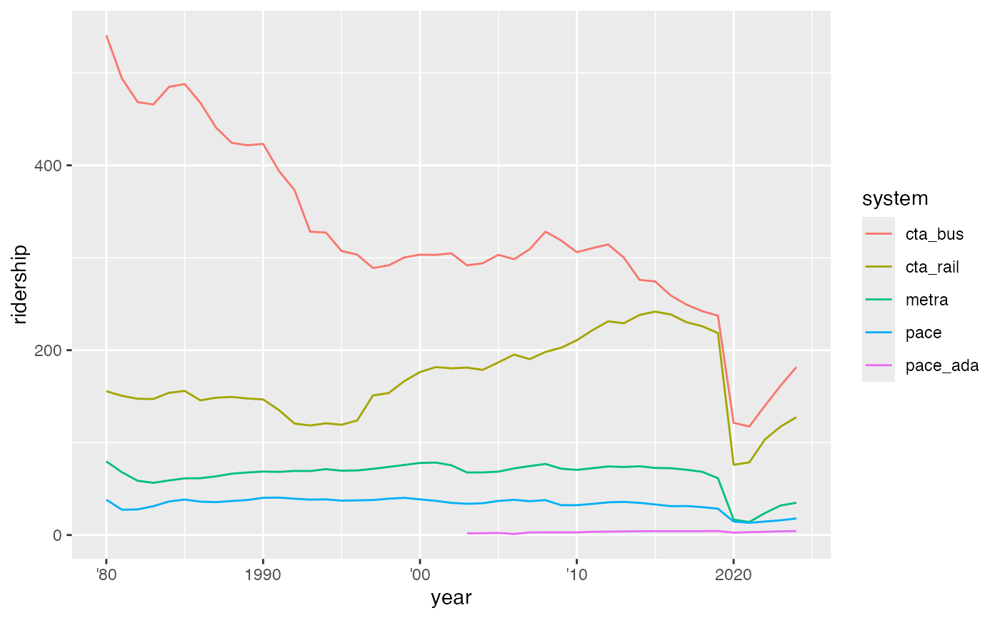
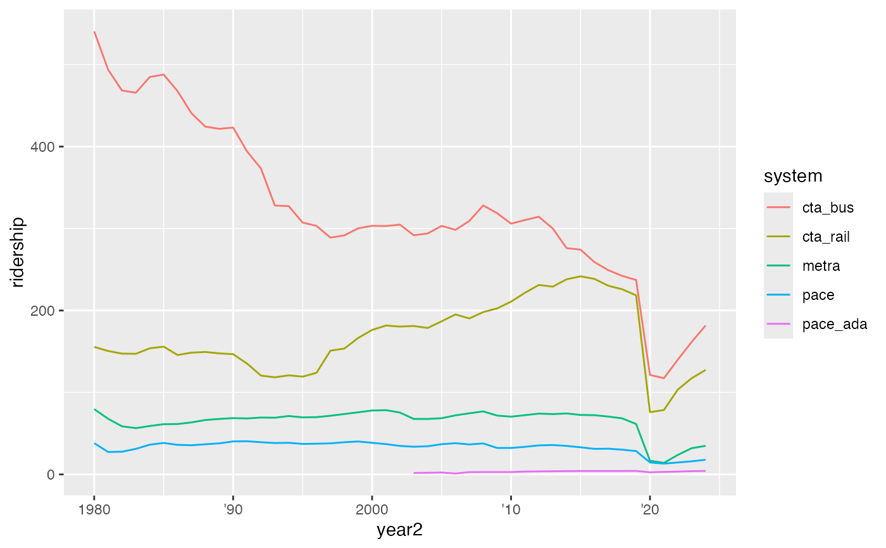
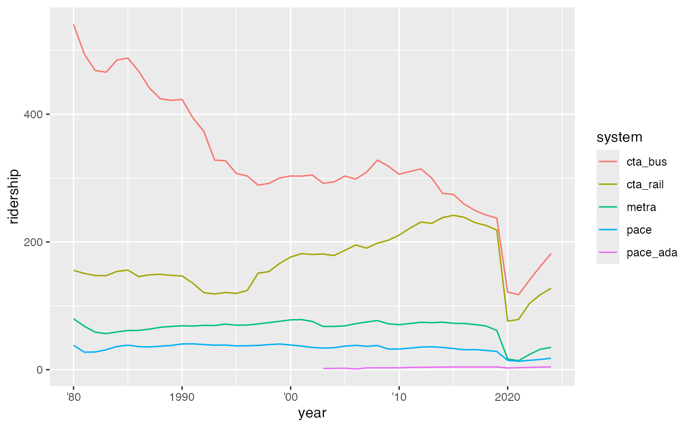

`abbr_years()` is a helper functions that allows users to abbreviate year
labels to their two-digit representation (e.g., 2008 to '08), but not
abbreviate any specified breaks. It does so by creating a new function that
takes the breaks supplied by ggplot2 as its only argument. The
function was modeled after the syntax and approach of the labeling functions
in the scales::label_* family.
abbr_years(full_by_pos = c(1), full_by_year = NULL, dateaxis = FALSE)Arguments
- full_by_pos
Vector of integers, the position of breaks that should not be abbreviated. This defaults to
c(1), which retains the original first label and abbreviates subsequent ones. If all breaks should be abbreviated, this can be set to NULL.- full_by_year
Vector of integers, the value of breaks that should not be abbreviated. Defaults to NULL.
- dateaxis
Bool.
FALSE, the default, directs the function to treat the breaks as integers. If set toTRUEthe function will instead treat the breaks as date objects.TRUEshould be used when called within ascale_*_dateggplot element.
Examples
# basic functionality
abbr_years()(c(2010:2020))
#> [1] "2010" "'11" "'12" "'13" "'14" "'15" "'16" "'17" "'18" "'19"
#> [11] "'20"
abbr_years(full_by_year = 2000)(c(1990:2010))
#> [1] "1990" "'91" "'92" "'93" "'94" "'95" "'96" "'97" "'98" "'99"
#> [11] "2000" "'01" "'02" "'03" "'04" "'05" "'06" "'07" "'08" "'09"
#> [21] "'10"
# Default implementation - this will abbreviate all labels except the first
# for both continuous and date scales.
df2 <- dplyr::mutate(transit_ridership, year2 = as.Date(lubridate::date_decimal(year)))
df1 <- dplyr::filter(df2, year >= 2000)
ggplot(df1,
aes(x = year, y = ridership, color = system)) +
geom_line() +
scale_x_continuous(labels = abbr_years())
#> Warning: Removed 3 rows containing missing values or values outside the scale range
#> (`geom_line()`).
 ggplot(df1,
aes(x = year2, y = ridership, color = system)) +
geom_line() +
scale_x_date(labels = abbr_years(dateaxis = TRUE))
#> Warning: Removed 3 rows containing missing values or values outside the scale range
#> (`geom_line()`).
ggplot(df1,
aes(x = year2, y = ridership, color = system)) +
geom_line() +
scale_x_date(labels = abbr_years(dateaxis = TRUE))
#> Warning: Removed 3 rows containing missing values or values outside the scale range
#> (`geom_line()`).
 # If customizations are desired, users can use \code{full_by_pos} and/or
# \code{full_by_year} to maintain the full version of the specified labels.
ggplot(df2,
aes(x = year2, y = ridership, color = system)) +
geom_line() +
scale_x_date(labels = abbr_years(full_by_year = c(2000), dateaxis = TRUE))
#> Warning: Removed 23 rows containing missing values or values outside the scale range
#> (`geom_line()`).

# You can also remove the default maintenance of the first label and only
# specify specific years.
ggplot(df2,
aes(x = year, y = ridership, color = system)) +
geom_line() +
scale_x_continuous(labels = abbr_years(full_by_pos = NULL,
full_by_year = c(1990,2020)))
#> Warning: Removed 23 rows containing missing values or values outside the scale range
#> (`geom_line()`).

# If customizations are desired, users can use \code{full_by_pos} and/or
# \code{full_by_year} to maintain the full version of the specified labels.
ggplot(df2,
aes(x = year2, y = ridership, color = system)) +
geom_line() +
scale_x_date(labels = abbr_years(full_by_year = c(2000), dateaxis = TRUE))
#> Warning: Removed 23 rows containing missing values or values outside the scale range
#> (`geom_line()`).

# You can also remove the default maintenance of the first label and only
# specify specific years.
ggplot(df2,
aes(x = year, y = ridership, color = system)) +
geom_line() +
scale_x_continuous(labels = abbr_years(full_by_pos = NULL,
full_by_year = c(1990,2020)))
#> Warning: Removed 23 rows containing missing values or values outside the scale range
#> (`geom_line()`).
